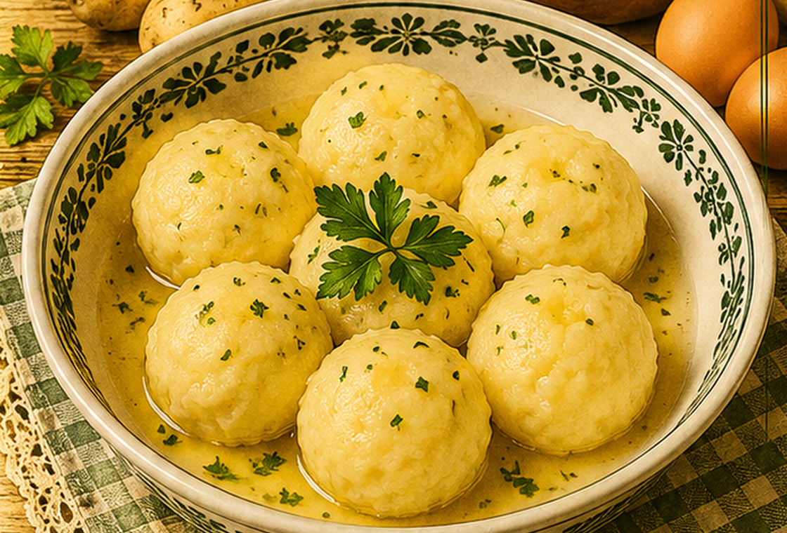

Klöße aus rohen Kartoffeln
Kartoffelklöße aus fein geriebenen und kräftig ausgedrückten rohen Kartoffeln.

Originale Überlieferung
Rohe Kartoffeln werden geschält, gerieben und gut ausgewunden. Mit Salz und ein bis zwei Eiern wird die Masse vermengt, zu Klößen geformt und in leichtem Salzwasser gar gekocht.
Moderne Übertragung
Die geriebenen Kartoffeln müssen sehr trocken ausgedrückt werden. Die abgesetzte Kartoffelstärke kommt zurück in die Masse und hilft bei der Bindung.
Zutaten
- 1 kg rohe mehligkochende Kartoffeln
- 1–2 Eier
- Salz
- abgesetzte Kartoffelstärke aus dem Presswasser
- nach Bedarf 1–2 EL Kartoffelstärke
Zubereitung
- Kartoffeln schälen, fein reiben und in einem Tuch sehr kräftig ausdrücken.
- Presswasser stehen lassen, dann abgießen und die abgesetzte Stärke zur Kartoffelmasse geben.
- Ei und Salz einarbeiten; bei Bedarf etwas Kartoffelstärke ergänzen.
- Einen kleinen Probekloß in siedendem Salzwasser garen.
- Klöße formen und im nur leicht siedenden Wasser gar ziehen lassen.